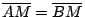
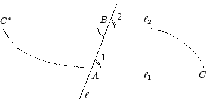
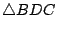
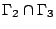
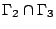
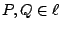
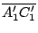
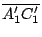

在定性平面幾何中還有其他的疊合條件、作圖題和不等式，它們都可以用等腰三角形的特徵性質來系統地推導而得。運用這些基本的事實，我們還可以証明三角形內角和不大于一個平角（詳見本章之末）。
【定理1.4】：(S.S.S.) 若
 和 和
 的三邊對應等長，則
的三邊對應等長，則
 。 。
証明：如 [圖1-4] 所示，我們可以在  的另一側作
使得
，則有
(S.A.S)，所以 的另一側作
使得
，則有
(S.A.S)，所以
 。連結 。連結
 ，由所設
和
皆為等腰。再由 [定理1.1]，即有 ，由所設
和
皆為等腰。再由 [定理1.1]，即有
□
[ 圖 1-4 ]
【基本作圖題1.1】：作一個給定角的分角線。
[ 圖 1-5 ]
[作法] 以給定角頂點 C 為圓心，任取一半徑在其角邊之兩條射線上分別截取
，如 [圖1-5] 所示。在
AB 的另一側有一個 C*，使得
而 C* 可以由以 r 為半徑分別以 A, B 為圓心的交截而得（C 和 C*
分別是這兩個圓的交點）。連結
 ，即為所求之 的分角線。 ，即為所求之 的分角線。
証明：由所作
 (S.S.S.)，所以
而且 A,B
分居于 CC* 之兩側。所以
平分 。
□
(S.S.S.)，所以
而且 A,B
分居于 CC* 之兩側。所以
平分 。
□
【基本作圖題1.2】：在射線
之一側作另一射線
使得  等于一個給定角
。 等于一個給定角
。
[ 圖1-6 ]
[作法] 以 為半徑，A' 為圓心，分別在
的兩個角邊上截取
。再以
A 為圓心， 為半徑和以 B 為圓心，
 為半徑各作一圓而得兩個分居于 AB 兩側的交點 C
和 C* 。由所作即有
(S.S.S.) 。
□
為半徑各作一圓而得兩個分居于 AB 兩側的交點 C
和 C* 。由所作即有
(S.S.S.) 。
□
【基本作圖題1.3】：作一給定線段 的垂直平分線。
[ 圖1-7 ]
[作法] 如 [圖1-7] 所示，在 AB 線外任取一點 C。若
，則可以由[基本作圖1.1]的作法求得居于另一側的 C*，使得
。則
CC* 就是 的垂直平分線。
若
，則可在 AB 同側再作
C' 點使得
。它們的兩對對應邊，即
和
之中必有一對相交與一點 （如 [圖1-7] 所示）。由[定理 1.3]，
，所以可以用前面的作法求得 AB 的另一側的 C* 點，使得
則
就是所求作的垂直平分線。
証明：由所作，
是等腰，而且
平分其頂角。由此易見
(S.A.S.)，所以
，
。
□
【定理 1.5】：設有相異直線  , ,  分別和第三條直線 分別和第三條直線  相交，若同位角相等（如 [圖1-8] 所示，
相交，若同位角相等（如 [圖1-8] 所示，
 ），則
, 不相交。 ），則
, 不相交。

[ 圖 1-8 ]
証明：我們用反証法，設
。在 上取
，
{C,C*} 分居 的兩側，連結
。則由所作
和
滿足
S.A.S.，所以兩者全等。由此可得
因此
，而 , 相交于分居
的兩側的 C 和 C* 。這顯然和二點確定唯一一條直線相矛盾。所以 和 是不可能相交的！
□
【定理 1.6】：三角形的任一外角大于其任一內對角。即如 [圖1-9] 所示， 大于  和 。 和 。
[ 圖 1-9 ]
証明：這是 [定理 1.5] 的直接推論。茲用反証法証之如下：設 B 點的外角 小于 ，則過 B 點作直線
，使得它和  具有相等的同位角。由[定理 1.5]，
和 不相交。但是由假設
，射線
是夾在 具有相等的同位角。由[定理 1.5]，
和 不相交。但是由假設
，射線
是夾在
 和
之間的。所以 A, C 分居于 的兩側，故此
和 和
之間的。所以 A, C 分居于 的兩側，故此
和  必須相交，亦即和 [定理 1.5] 相矛盾。這也就証明了外角 必須都大于其二個內對角 , 。
□ 必須相交，亦即和 [定理 1.5] 相矛盾。這也就証明了外角 必須都大于其二個內對角 , 。
□
【定理 1.7】：(A.A.S.) 若
和
滿足
,
 和
，則
。 和
，則
。
証明：若兩者還有
 ，則兩者其實已經滿足 S.A.S.。假若不然，可設
。在
上取 C* 點使得
，則有
，則兩者其實已經滿足 S.A.S.。假若不然，可設
。在
上取 C* 點使得
，則有
所以
，亦即
的外角等于其中一個內對角，這是和[定理 1.6]（或者[定理 1.5]）相矛盾的。所以  和
必須等長，亦即
。
□ 和
必須等長，亦即
。
□
[ 圖 1-10 ]
[註]：上述的証明中沒有用到平直性。若有平直性，即三角形內角和恆為平角，則
A.A.S. 是 A.S.A. 的直接推論。
【定理 1.8】：大邊對大角，大角對大邊。
証明：先証大邊對大角。設
的邊長中
，我們要証明
。
[ 圖1-11 ]
証明：如 [圖1-11] 所示，在 上取 D 點使得
，則有等腰三角形
 的兩底角
，而
是
的 D 點外角，所以即有
的兩底角
，而
是
的 D 點外角，所以即有
[大角對大邊的証明留作習題]
□
【定理 1.9】：三角形的兩邊之和大于第三邊，即
証明：如 [圖1-12] 所示，在 的延線上取
，則等腰三角形

的兩底角相等，所以在
中
，即有
[ 圖1-12 ]
【定理 1.10】：在平面 Π 上給定兩個相異點 A, B，其等距的點所成的子集
乃是 的垂直平分線。
証明：令 M 為 的中點，X1 為  中任給一點，則有
等腰，所以
。反之，若 X2 是
中垂線上任給一點，則
(S.A.S.)，所以
，亦即
。
□
中任給一點，則有
等腰，所以
。反之，若 X2 是
中垂線上任給一點，則
(S.A.S.)，所以
，亦即
。
□
[ 圖1-13 ]
【基本作圖題 1.4】：過直線 上一點 M，作其垂直線。
[作法] 在 上 M 點的兩側各取 A, B 使得
M 是 的中點，再用圓規作兩個分別以 A, B
為圓心，以相同但是大于 為半徑的圓。則兩圓會交于
X1, X2 兩點，而 X1X2 即為所求作者。
[証明留作習題]
[ 圖1-14 ]
【基本作圖題 1.5】：設 P 是直線 之外一點，作過 P
點而且和 垂直的直線。
[作法] 在平面上取一點 Q，使得 P, Q 分居 線的兩側，如 [圖1-15] 所示。以 為半徑，先以 P
點為圓心作  ，與 交于 A, B 兩點。然後分別以 A, B 為圓心作 , ，
得
 的兩交點 P, P' 。
則 ，與 交于 A, B 兩點。然後分別以 A, B 為圓心作 , ，
得
 的兩交點 P, P' 。
則
 被 所垂直平分。[証明留作習題] 被 所垂直平分。[証明留作習題]
[ 圖1-15 ]
【定義】：對于平面上一條給定直線 ，線外兩點
P, P' 若滿足
被 垂直平分，則稱
P, P' 對于 成反射對稱。
[上述作圖題說明如何去由 P 作出 P' 。]
【定義】：平面對于給定直線 的反射對稱
 是平面到自身的一個映射。它把線上的點映射到自己，線外的點映射到其反射對稱點 P，即 是平面到自身的一個映射。它把線上的點映射到自己，線外的點映射到其反射對稱點 P，即
【定理 1.11】：
是平面上的一個保長變換，即：
對于平面上任給兩點 P, Q 皆成立。
証明：在此，將採用簡約符號 P' 表示
。
- (i)
- 若 , 則 P'=P, Q'=Q，即
 和 是同一直線段。
和 是同一直線段。
- (ii)
- 若 , ，則
 的底邊
的底邊
 被 所垂直平分，即有
。所以
。 被 所垂直平分，即有
。所以
。
- (iii)
- 若
，則在 上取定一點 P0 。由 (ii) 之所証，
和
都是等腰三角形，因此 乃是它們在頂角的平分線，由此可見
。所以
(S.A.S.),
。
□
[ 圖1-16 ]
【定理 1.12】：從直線 之外一點 P，到線上各點的距離以垂直線所給出者為唯一極小。
[ 圖1-17 ]
証明：設
和 正交于 Q0，Q 為
上任給另外一點，則
在 Q0 點的外角是
。由[定理 1.6]，即得
。再由[定理 1.8]即得
[註]：在這裡沒有用到勾股定理（勾股定理是依賴于平行性的）。
【定理 1.13】：設  為圓內接四邊形，亦即四個頂點
A, B, C, D 共圓。則有 為圓內接四邊形，亦即四個頂點
A, B, C, D 共圓。則有
証明：令 O 為 的外接圓圓心，則
 , ,
 ,
,
皆為等腰，所以其底角分別相等。設其有向角為 ,
,
皆為等腰，所以其底角分別相等。設其有向角為
 , , , , , , , ,
 , , , ，則有 , , , ，則有
[ 圖1-18 ]
【定理 1.14】：三角形的內角和不大于 π 。
証明：我們將用反証法，亦即設存在有一個內角和大于
π 的三角形
，即有
我們要僅僅用疊合公理，連結與分隔去得出矛盾。設 是三個內角中的最小者，M 是 的中點。
如 [圖1-19] 所示，連結 ，延長一倍而得 A*：
[ 圖1-19 ]
由所作易見
(S.A.S.)，所以
的三個內角和也等于
，而且
。由此可見
中的最小內角至多只是原先
的最小內角（）的一半。如此逐步構造，所得的三角形的內角和一直保持是
，而且其最小內角的大小每次至少減半。所以只要作足夠多次，則其最小內角就肯定要比 ε 還要小！亦即其另外兩個內角之和已經大于 π ！這顯然是和外角大于內對角（定理 1.6）相矛盾的。這也是証明了這種內角和大于平角的三角形其實是不可能存在的，亦即任何三角形的內角和不大于 π 。
□
【定理 1.15】：若存在一個三角形其內角和等于 π，則任何三角形的內角和也必須等于 π 。
証明：設有一個三角形
其內角和等于
π，則由其大角 到其對邊 作垂線  。 。
[ 圖1-20 ]
即有
所以直角三角形
和
的內角和也都等于 π 。用其中之一即可得一個四內角皆為
的「矩形」，如 [圖1-20] 所示的
。將這個矩形逐一堆砌即可得出長和寬都可以任意大的矩形，如 [圖1-21] 所示：
[ 圖1-21 ]
現在我們要用[定理 1.14]來証明任何直角三角形的內角和都必然等于 π 。設
 是一個任給直角三角形，
，我們可以 [圖1-21] 所作的那個足夠大的矩形構造
，使得其直角邊
 和
都包含在該矩形的兩個直角邊之內。而由 [圖1-22] 所示：
是一個任給直角三角形，
，我們可以 [圖1-21] 所作的那個足夠大的矩形構造
，使得其直角邊
 和
都包含在該矩形的兩個直角邊之內。而由 [圖1-22] 所示：
[ 圖1-22 ]
這樣就証明了任何直角三角形的內角和皆等于 π 。而任何三角形都可以像 [圖1-20] 那樣分割成兩個直角三角形，所以它的內角和也必然等于 π 。
□
[註]：[定理 1.14]和[定理 1.15]証明了在任何滿足連結、分隔和疊合（對稱性）的幾何之中，三角形的內角和不是恆等于 π 就是恆小于 π 。前者是歐氏幾何，而後者則是非歐幾何。在後者的情形，我們還可以証明下述角虧
(angle defect)
和
的面積成比例。
|